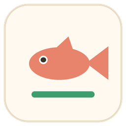

一个无边框、置顶、圆角的小贴纸，直接贴在桌面上。三个页签切换大一 / 大二 / 大三，点一下就打勾，勾选状态自动保存。

data/plans.json，随时改# 需要 Python 3.8+
python sticker.pyWindows 用户也可以直接双击 启动.cmd。想开机自启的话，把 启动.lnk 放进启动文件夹。
打开 data/plans.json，按这个结构改：
{
"大一": ["考过四级", "加入一个社团", "..."],
"大二": ["..."],
"大三": ["..."]
}